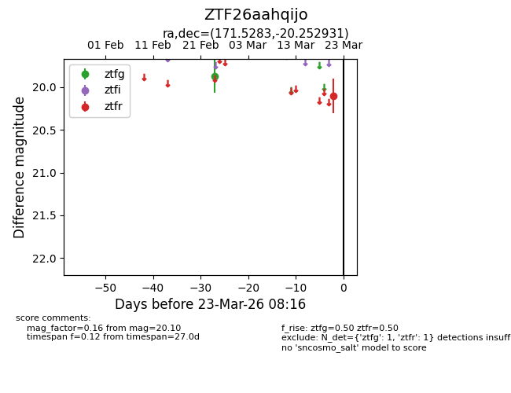
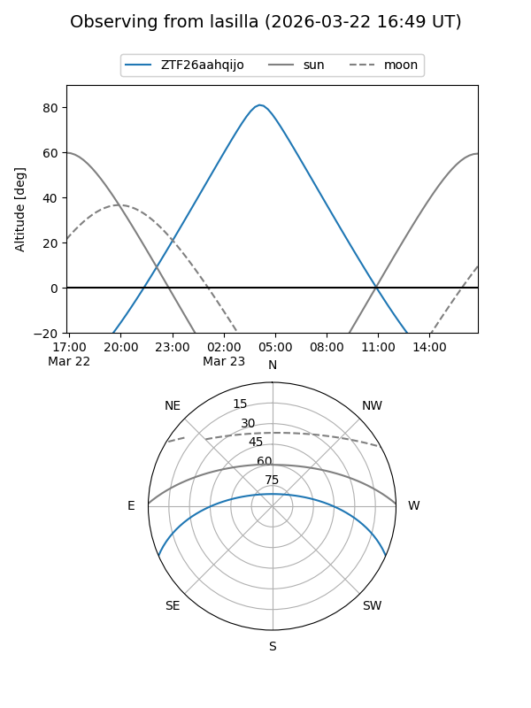
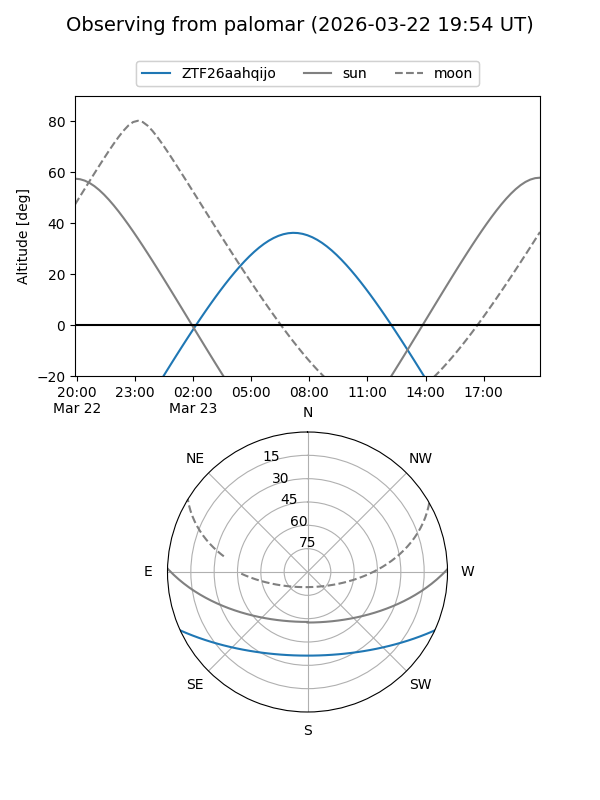

ZTF26aahqijo
Target ZTF26aahqijo at 2026-03-23 08:18
Aliases and brokers:
FINK: link
Lasair: link
ALeRCE: link
alt names
ZTF26aahqijo (ztf,fink_ztf)
Coordinates:
equatorial (ra, dec) = 171.5283,-20.25293
equatorial (HMS+DMS) = 11:26:06.78,-20:15:10.55
galactic (l, b) = (277.1516,+38.31007)
Flags:
Photometry:
last ztfg=19.87, ztfr=20.10
1 ztfg, 1 ztfr detections
Lightcurve

Visibility


Additional plots